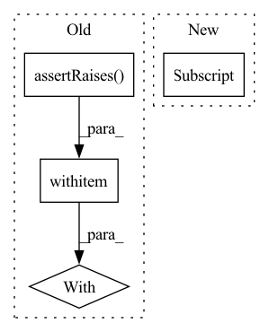

Pattern ID :31253
Before Change
// ... and connect it directly via connect_var(..)
// The naming conflict should raise an AssertionError
with self .assertRaises(AssertionError):
rp.connect_var(v)
@unittest.skip("Currently not supported")
def test_connect_RefPort_to_many_Vars(self):After Change
// VarPort to a Var...
self.assertEqual(rp.get_dst_vars(), [v])
// ... but still creates a VarPort implicitly
vp = rp.get_dst_ports()[0]
self.assertIsInstance(vp, VarPort)
// ... which wraps the original Var
self.assertEqual(vp.var, v)
In pattern: SUPERPATTERN
Frequency: 4
Non-data size: 4
Instances Fragment ID: 91644254
Project Name: lava-nc/lava
Commit Name: ae45028ae1c04d8ab56988a77d3af67caf9fd488
Time: 2023-05-02
Author: alessandro.pierro@intel.com
File Name: tests/lava/magma/core/process/ports/test_ports.py
M Class Name: TestRVPorts
N Class Name: TestRVPorts
M Method Name: test_connect_RefPort_to_Var_process_conflict(1)
N Method Name: test_connect_RefPort_to_Var_process_conflict(1)
M Parent Class: unittest.TestCase
N Parent Class: unittest.TestCase
M File Name: tests/lava/magma/core/process/ports/test_ports.py
N File Name: tests/lava/magma/core/process/ports/test_ports.py
M Start Line: 311
M End Line: 314
N Start Line: 302
N End Line: 325
Before Change
config=server_config)
// Set CUDA_VISIBLE_DEVICES and start the server
with self .assertRaises(TritonModelAnalyzerException,
msg="Expected to exceed num_retries"):
self.server.wait_for_ready()
self.server.start()
self.server.wait_for_ready()After Change
def test_start_wait_stop_gpus(self):
// Create a TritonServerConfig
server_config = TritonServerConfig()
server_config["model-repository"] = MODEL_REPOSITORY_PATH
os.environ["CUDA_VISIBLE_DEVICES"] = "0"
// Create server in docker, start , wait, and stop Fragment ID: 91644263
Project Name: triton-inference-server/model_analyzer
Commit Name: 586a5c35319c6cd15b49acf19846141fcc89e283
Time: 2020-11-24
Author: asramesh@nvidia.com
File Name: tests/test_triton_server.py
M Class Name: TestTritonServerMethods
N Class Name: TestTritonServerMethods
M Method Name: test_start_wait_stop_gpus(1)
N Method Name: test_start_wait_stop_gpus(1)
M Parent Class: unittest.TestCase
N Parent Class: unittest.TestCase
M File Name: tests/test_triton_server.py
N File Name: tests/test_triton_server.py
M Start Line: 145
M End Line: 168
N Start Line: 163
N End Line: 204
Before Change
dset.set_format(type="torch", columns=["col_1", "col_2"])
for dset_split in dset.values():
with self .assertRaises(TypeError):
dset_split[0]
del dset
@require_tfAfter Change
for dset_split in dset.values():
self.assertEqual(len(dset_split[0]), 2)
self.assertIsInstance(dset_split[0]["col_1"], torch.Tensor)
self.assertListEqual(list(dset_split[0]["col_1"] .shape), [])
self.assertEqual(dset_split[0]["col_1"].item(), 3)
self.assertIsInstance(dset_split[0]["col_2"], str)
self.assertEqual(dset_split[0]["col_2"], "a") Fragment ID: 91644255
Project Name: huggingface/datasets
Commit Name: 1b935dab9d2f171a8c6294269421fe967eb55e34
Time: 2022-10-10
Author: 42851186+lhoestq@users.noreply.github.com
File Name: tests/test_dataset_dict.py
M Class Name: DatasetDictTest
N Class Name: DatasetDictTest
M Method Name: test_set_format_torch(1)
N Method Name: test_set_format_torch(1)
M Parent Class: TestCase
N Parent Class: TestCase
M File Name: tests/test_dataset_dict.py
N File Name: tests/test_dataset_dict.py
M Start Line: 111
M End Line: 113
N Start Line: 110
N End Line: 116
Before Change
torch.testing.assert_allclose(tagged_loss_values["loss2"], torch.tensor([15.]))
def test_direct_loss_access_when_two_losses_specified(self):
with self .assertRaises(ValueError):
JointLoss(
losses=[Loss1(), Loss2()],
tags=["loss1", "loss2"],
mappings=[{After Change
total_loss, tagged_loss_values = joint_loss.forward(x=torch.ones(1), y=torch.full((1,), fill_value=5.))
torch.testing.assert_allclose(total_loss, torch.tensor([8.]))
torch.testing.assert_allclose(tagged_loss_values["loss1"] , torch.tensor([5.]))
torch.testing.assert_allclose(tagged_loss_values["loss2"], torch.tensor([15.]))
Fragment ID: 91644268
Project Name: eora-ai/torchok
Commit Name: 11411d72fab3069c4863322d6efb7316930737ff
Time: 2022-05-17
Author: vladt9@yandex.ru
File Name: tests/losses/test_base_losses.py
M Class Name: TestJointLoss
N Class Name: TestJointLoss
M Method Name: test_direct_loss_access_when_two_losses_specified(1)
N Method Name: test_direct_loss_access_when_two_losses_specified(1)
M Parent Class: unittest.TestCase
N Parent Class: unittest.TestCase
M File Name: tests/losses/test_base_losses.py
N File Name: tests/losses/test_base_losses.py
M Start Line: 68
M End Line: 77
N Start Line: 63
N End Line: 77